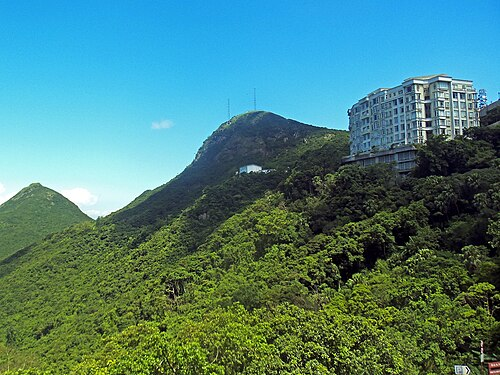
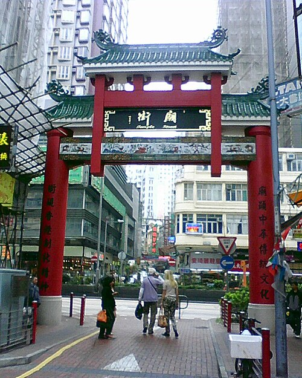
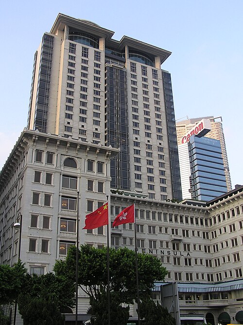

This map shows 19 of the most-searched sights in Hong Kong as photo spots, ranked by how often people search for them: Victoria Peak, Temple Street Market, The Peninsula, Two IFC and Avenue of Stars lead the list. Every spot has a pin on the subject and a phone icon showing where to stand, with tips for shooting it on your phone: which lens to use, how to frame it, a settings tip and the best time of day. Directions and Navigate buttons take you to the standing point on foot or by public transport. 3 spots are free to view; the full map is for members.
The 3 free photo spots
1Victoria Peak

Victoria Peak is the tallest hill on Hong Kong Island, at 552 metres. Locals simply call it The Peak. The name also covers the surrounding area of parks, viewing places and homes. It photographs well because the height gives a wide outlook over Central, Victoria Harbour, Lamma Island and the other islands, so one frame can hold towers, water and hills. People have come here for the view and the cooler air since the 19th century. A governor's summer house went up around 1868, and the Peak Tram funicular opened in 1888, which made the slope much easier to reach. The summit itself carries a radio facility and is closed to the public, so the best pictures are taken from the public areas around it rather than from the very top. Start with a wide shot of the skyline and harbour, then move in for details such as a cluster of towers or a single island. Keep the horizon level, because the straight line of the water shows any tilt. Wipe your lens first, and if the view is hazy, wait a little.
Where it is: Victoria Peak is on the western half of Hong Kong Island, rising above Central and Victoria Harbour.
Shooting it on your phone
Lens: Use the ultra-wide (0.5x) for the whole sweep of harbour and skyline, and the default lens (1x) for a cleaner, less stretched view. A telephoto (2x-5x, depending on your phone) is good for picking out the towers of Central or a distant island.
Where to stand: Stand about 420 m north-east of the subject, at the phone icon on the map, and face south-west. Photograph the Peak's slopes and the nearby buildings by turning to face that direction.
Framing: Switch on the gridlines and put the horizon on the upper or lower line, depending on whether the sky or the city is more interesting. Include some foreground, such as trees or a railing, to give depth. For the wide view, try panorama mode and move the phone slowly and steadily.
Settings tip: Tap on the city to set focus, then slide the exposure down a little so the sky keeps its colour and detail. If haze softens the distance, try the telephoto, which often gives more contrast on far buildings.
Best time: Late afternoon into dusk is a good time to try, as the light softens and the city lights come on. Use night mode once it is properly dark, and hold the phone against a solid surface to keep it still.
2Temple Street Night Market

Temple Street Night Market is one of the busiest night markets in Hong Kong, in the Yau Ma Tei and Jordan part of Kowloon. It is popular with visitors and locals alike and is usually crowded around dusk. The street was built in the Qing dynasty and takes its name from the Tin Hau temple on the site. The temple area is a quieter, more atmospheric option for a phone photo than the busy main stretch. From the front of the temple, where the market is split by the temple complex, you can frame the ornate roof and the hanging incense coils, with market and fortune-teller stalls beside them. The mix of old religious detail and bright stall lights is what makes the scene work. The market has more than a hundred stalls with colourful lights, so there is plenty of colour at dusk and after dark. If you want a wider view, two other spots may be worth a look. One is the red archway on Temple Street, which frames the lit stalls and neon signs. The other is the upper level of the Yau Ma Tei Multi-Story Car Park, which has been described as looking down over the stall canopies. However, one guide says the car park was demolished and the view is no longer possible, and it may also be closed or full of parked cars, so verify on site before relying on it. Keep to the edge of the walkway when you stop to shoot, as the street gets busy.
Where it is: Temple Street runs through Yau Ma Tei and Jordan in Kowloon, Hong Kong. The night market sits around the Tin Hau temple that gave the street its name.
Shooting it on your phone
Lens: Use the default lens (1x) for the temple roof and the stalls beside it. Switch to the ultra-wide (0.5x) for the red archway or a view down from a height. Use the telephoto (2x-5x, depending on your phone) to pick out the hanging incense coils without stepping into people's way.
Where to stand: Stand right at the subject (in front of the temple, where the market is split by the temple complex). The temple's ornate roof and the hanging incense coils, with the market and fortune-teller stalls beside it.
Framing: Turn on the gridlines and put the temple roof on the upper line, with the incense coils and stall lights below. For a wider alternative, shoot the red archway on Temple Street so it frames the lit stalls and neon signs. A high view from the Yau Ma Tei Multi-Story Car Park is another option only if it is open, as one guide says it was demolished.
Settings tip: Tap the brightest part of the scene to focus, then lower the exposure slider a little so the neon and stall lights do not wash out. If your phone offers night mode, use it for the temple detail. Hold the phone steady against your body or a railing, as night mode needs a still moment.
Best time: Dusk is when the market is lively and the lights come on, so arrive then and keep shooting as it gets darker.
3The Peninsula Hong Kong

The Peninsula Hong Kong is a landmark colonial-style luxury hotel in Tsim Sha Tsui, Kowloon. It opened on 11 December 1928 at the corner of Nathan Road and Salisbury Road, and its Italianate frontage still looks formal and elegant. In 1994 a 30-storey tower was added in a similar style, and the original front facade and forecourt were kept. The hotel is also known for its fleet of Rolls-Royces painted in the hotel's own green.
The busy street corner is the obvious place to photograph it, but it is crowded and full of traffic. From there you can look back at the hotel through the trees. The branches act as a natural frame and give the picture some depth that a flat street-level shot lacks.
Take a few frames at different zoom levels, and turn the phone upright to include more of the tower. If you visit before Christmas, the hotel's festive decorations are traditionally put up weeks ahead, so the street-level views look quite different then. Keep to the pavements and crossings whenever you step out to compare angles.
Where it is: The hotel is in Tsim Sha Tsui, in Kowloon, Hong Kong, at the junction of Nathan Road and Salisbury Road.
Shooting it on your phone
Lens: Start with the default lens (1x) to take in the hotel and the trees around it. Then try telephoto (2x-5x, depending on your phone) to pull the facade closer and keep the branches as a frame. Use ultra-wide (0.5x) only if you move closer to the frontage, and hold the phone level so the walls do not lean.
Where to stand: Stand in Salisbury Road Garden (garden on Salisbury Road, looking back at the hotel). The hotel seen through the trees of the garden, a less crowded framing than the street-level view.
Framing: Let branches or leaves frame the top or one side of the picture, with the hotel's facade in the gap. Turn on the gridlines to keep the building straight. For a different view, take a second shot from Nathan Road at Salisbury Road, where you get the frontage and tower with the street in the foreground, or from Salisbury Road, where the facade fills the frame. At street level, use the pavement crossings and do not step into barriered areas or stand near traffic.
Settings tip: Tap the hotel to focus, then drag the exposure slider down slightly so the sky and bright facade keep their detail, as the trees can make the scene look dark.
Best time: Daylight suits the tree-framed view. For the festive decorations on the street-level views, go in the weeks before Christmas, but check what is up on the day.
16 more spots for members
These spots are on the map as grey numbered pins. Where to stand, the phone tips, photos and directions for them come with Explorer membership.
- 4Two International Finance Centre · members
- 5Avenue of Stars · members
- 6Man Mo Temple · members
- 7Star Ferry · members
- 8Bank of China Tower · members
- 9Central–Mid-Levels escalator · members
- 10Peak Tram · members
- 11Hong Kong Park · members
- 12Tai Kwun · members
- 13International Commerce Centre · members
- 14Hong Kong Observation Wheel · members
- 15Tsim Sha Tsui Promenade · members
- 16HSBC Main Building · members
- 17Hong Kong Cultural Centre · members
- 18Golden Bauhinia Square · members
- 19St John's Cathedral · members
Get every spot with Explorer membership
Explorer opens every spot on every map in the library: where to stand, how to frame it on your phone and how to get there, plus the Xdatrys Maps app with maps saved on your phone for use without signal. $9.99 a month or $59.99 a year; cancel any time.
Join Explorer Compare free and Explorer
Not ready to join?
Get Pocket Lens, our free daily smartphone travel photography newsletter.
Free, and you can unsubscribe at any time. If the form does not show, sign up on our newsletter page.
Questions
What are the top photo spots in Hong Kong?
The first three on this map are Victoria Peak, Temple Street Market and The Peninsula. They are ranked by how often people search for them. The full map has 19.
Where should I stand to photograph Victoria Peak?
Stand about 420 m north-east of Victoria Peak, at the phone icon on the map, and face south-west. Use the ultra-wide (0.5x) for the whole sweep of harbour and skyline, and the default lens (1x) for a cleaner, less stretched view.
When is the best time to photograph Temple Street Market?
Dusk is when the market is lively and the lights come on, so arrive then and keep shooting as it gets darker.
How do I get to The Peninsula?
Start in Tsim Sha Tsui and head for Salisbury Road.
Credits
Map data © OpenStreetMap contributors (ODbL); base map built with Protomaps from OpenStreetMap data. Photos from Wikimedia Commons, credited under each photo with their licence. Background reading for the free spots: Victoria Peak, Temple Street, Hong Kong, The Peninsula Hong Kong (Wikipedia, CC BY-SA). Access rules and opening times change: check before you go.